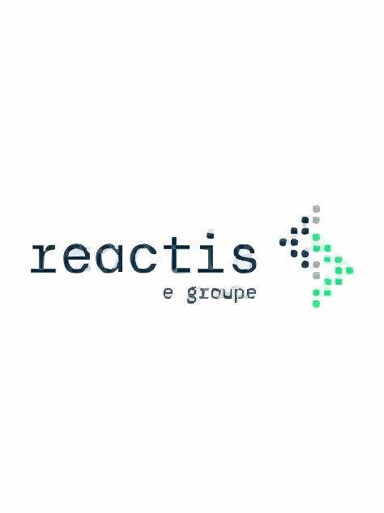
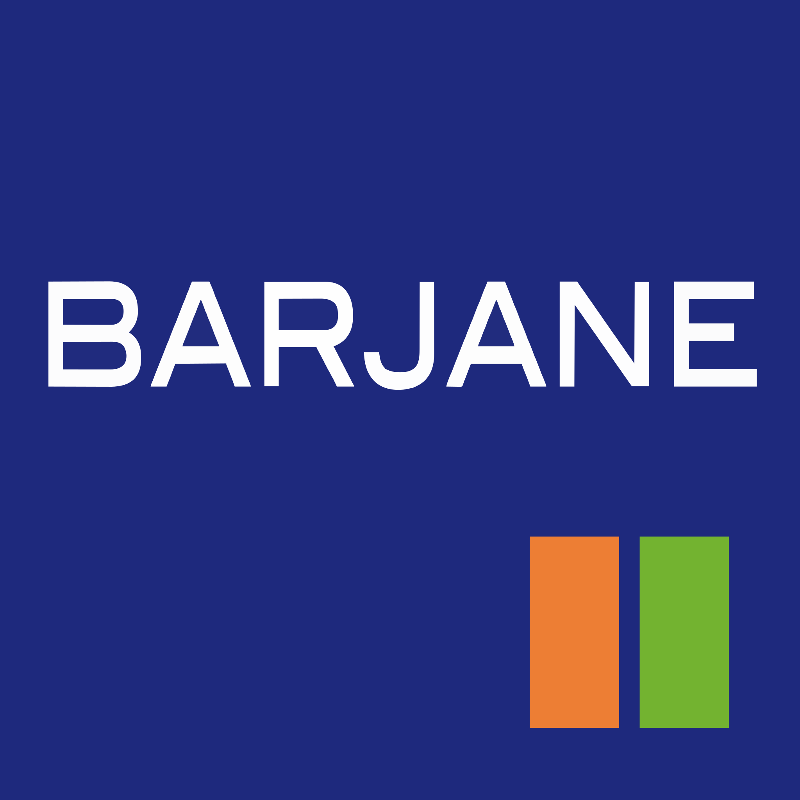
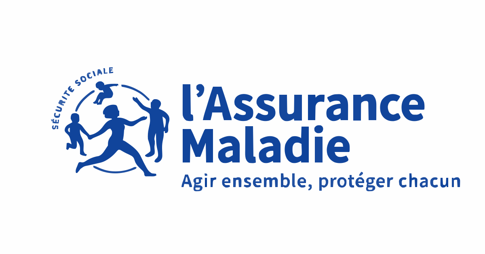

EPITECH
Diplôme d'Établissement - Expert en Technologies de l'information (Bac +5)
Detailed Profile
What I Am Building Toward
I want to work as a Product Owner: the person who turns business and client needs into priorities a development team can deliver. I already do this on Nexum, a five-person Epitech innovation project, and my background covers both halves of the job.
Born in Singapore with French nationality, I have lived in Singapore, Vietnam, Australia and France, and I am now studying in Canada. I work fluently in English and French.
On the tech side, I have spent three internships inside development teams: migrating legacy Java components at CPAM des Bouches-du-Rhône, acting as the sole internal IT referent at BARJANE, and developing production Java features for an aeronautical maintenance application at REACTIS Group. I know what sprints, code reviews and technical debt look like from the developer's chair.
On the business side, as Regional Director and Business Manager for Junior Conseil Taker, I built the Marseille branch from scratch and grew it to 11 members, selling B2B projects and managing client projects end to end. In 2026 the branch won the Best Engineering Study award, presented by ALTEN, at the CNJE's national summer congress. As Vice President of the EPITECH Marseille BDE, I led weekly meetings, tracked the budget and set up local company partnerships.
Education
Diplôme d'Établissement - Expert en Technologies de l'information (Bac +5)

Certificate in Management (Bachelor Degree track)

AI Entrepreneurship Certificate

Working on an aeronautical maintenance application, developing production Java features, and contributing to code quality and sprint delivery with the engineering team.

Managed IT support operations, improved infrastructure reliability, automated recurring processes, and supported website modernization initiatives.

Contributed to legacy-to-modern Java migration, refactoring, documentation, and stabilization with targeted fixes and testing support.


Contributed to solving a real business challenge for Biotech One by combining technical perspective with market and strategic analysis.
Core Strengths